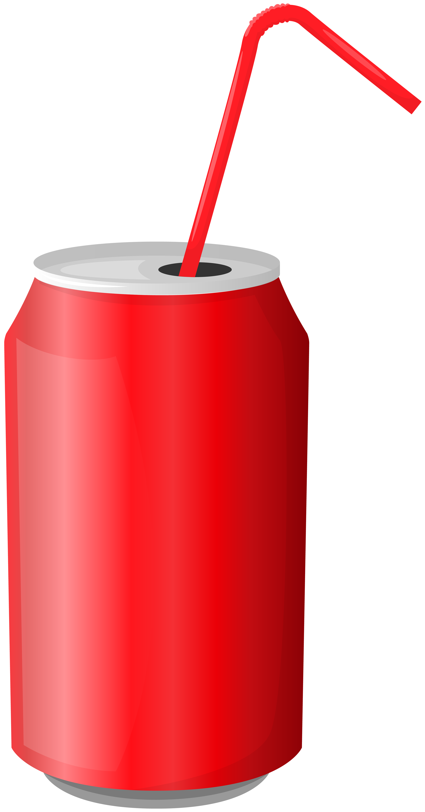
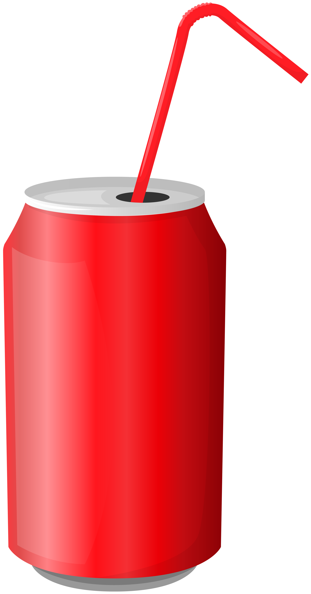

Welcome to the Composting Adventure Game!
Compost is like a special kind of dirt made from old plants and food scraps. Imagine you have some banana peels, apple cores, and leaves from the garden. Instead of throwing them in the trash, you can put them in a compost bin. Over time, these scraps break down and turn into a rich, dark soil.
This special soil is really good for helping plants grow. It's like a vitamin for flowers, vegetables, and other plants in the garden. When we use compost, we help the Earth by recycling old plant materials into something new and useful, rather than letting them go to waste. So, composting is our way of helping nature by making sure nothing useful gets thrown away. Think about Benny the banana, do you still want to hurt Benny after imagining a world of sufferings?
In this game, you'll see pictures of things like banana peels, plastic bags, and old shoes. Your job is to drag each picture into our special bin. But wait! Not everything goes in the same bin.
- Food scraps like banana peels and apple cores go into the compost bin because they can turn into dirt that helps plants grow.
- Things like plastic bags and cans go into the recycling bin because they can be made into new things instead of going to the trash.
Each time you put something in the right bin, you get points and see your score go up. If you put something in the wrong bin, you’ll get a message telling you the right place for it, and you’ll try again!
Let’s see how many points you can score by helping keep our Earth clean and happy! Try full up the bar in one go!
Ready to play? Drag the items to the right bins and let’s see how much you can score!
 
